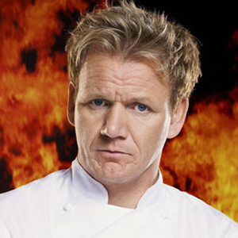
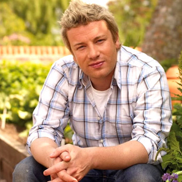
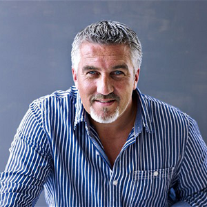
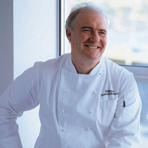
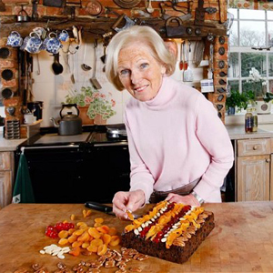
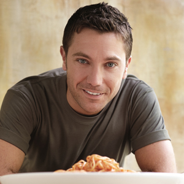
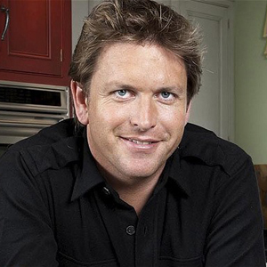
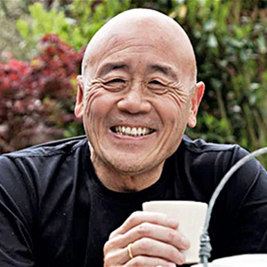

Home
Conversions
Contact
Links Page
Wiki Top Chefs
Gordon Ramsey
Jamie Oliver
Paul Hollywood
Rick Stein
Mary Berry
Hugh Fearnley Whittingstall
Michel Roux Jr
Gino D'Acampo
James Martin
Ken Hom








Restaurants
The Fat Duck
Fifteen
Le Manoir aux Quat Saisons
Le Champignon Sauvage
The Kitchin
Restaurant Sat Bains with Rooms
The Vineyard at Stockcross
Hand and Flowers
The Crown at Whitebrook
Midsummer House